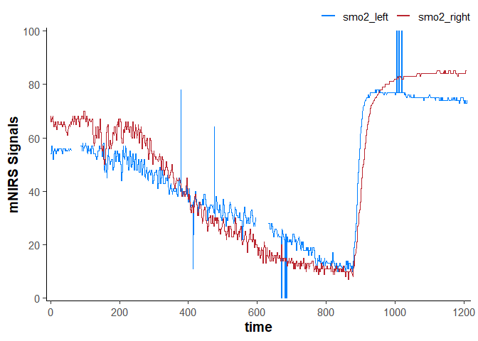
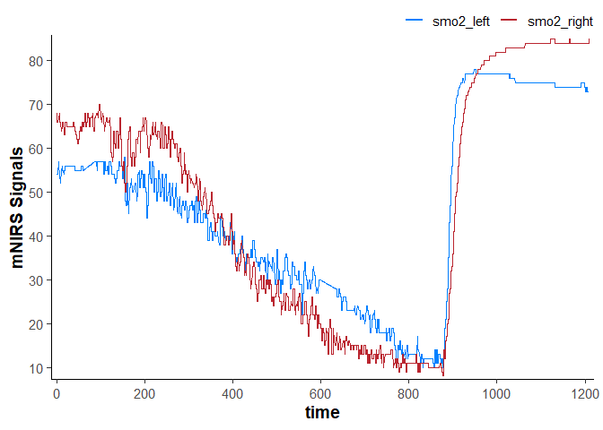
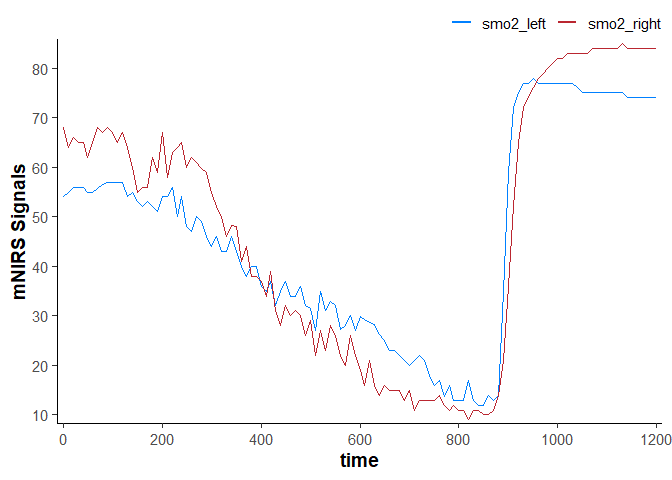
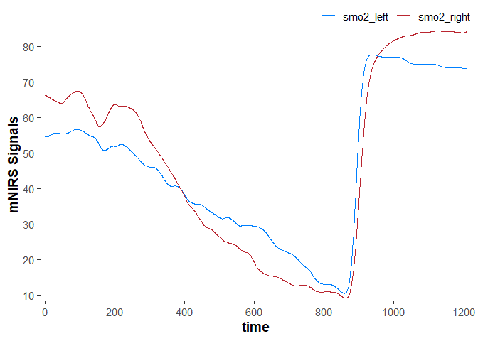
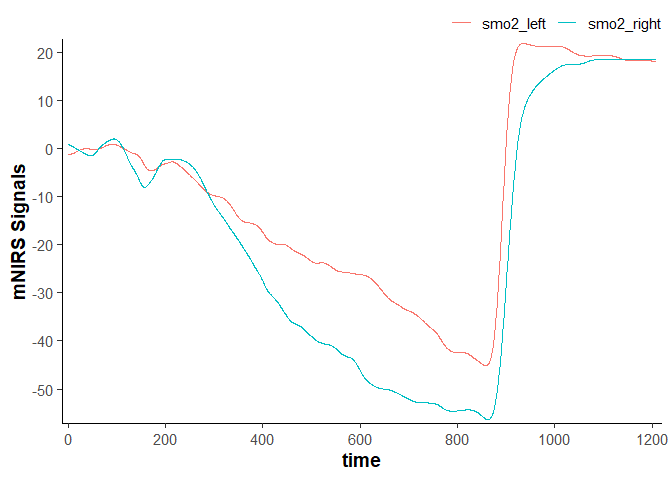
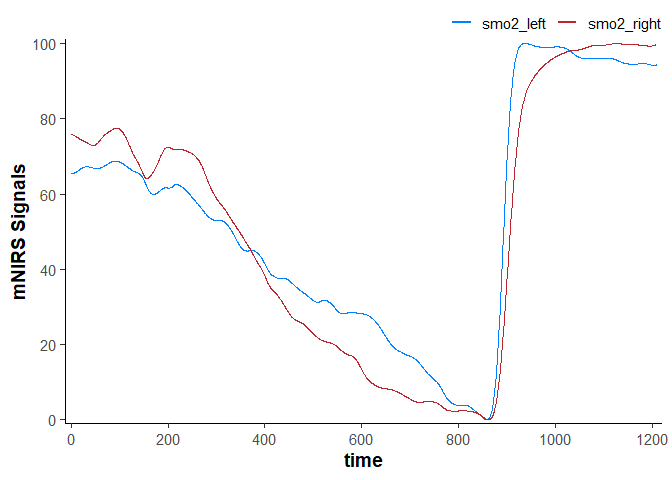

mNIRS is a package to allow for importing, processing, and analysing data from muscle near-infrared spectroscopy (mNIRS) devices.
Installation
You can install the development version of mNIRS from GitHub with:
# install.packages("remotes")
devtools::install_github("jemarnold/mNIRS")Online App
A very basic implementation of this package is hosted at https://jem-arnold.shinyapps.io/mNIRS-app/ and can be used for mNIRS data importing and cleaning.
Usage
Read data from file
library(dplyr, warn.conflicts = FALSE) ## load for data wrangling
library(ggplot2) ## load for plotting
library(mNIRS)
## {mNIRS} includes sample files from a few NIRS devices
file_path <- system.file("extdata/moxy_ramp_example.xlsx", package = "mNIRS")
## rename columns in the format `new_name1 = "file_column_name1"`
## where "file_column_name1" should match the file column name exactly
data_raw <- read_data(file_path,
nirs_columns = c(smo2_left = "SmO2 Live",
smo2_right = "SmO2 Live(2)"),
sample_column = c(time = "hh:mm:ss"),
event_column = c(lap = "Lap"),
sample_rate = 2,
numeric_time = TRUE,
keep_all = FALSE,
verbose = FALSE)
data_raw
#> # A tibble: 2,203 × 4
#> time lap smo2_left smo2_right
#> <dbl> <dbl> <dbl> <dbl>
#> 1 1740. 1 54 68
#> 2 1740. 1 54 68
#> 3 1741. 1 54 68
#> 4 1742. 1 54 66
#> 5 1742. 1 54 66
#> 6 1743. 1 54 66
#> 7 1743. 1 54 66
#> 8 1744. 1 57 67
#> 9 1744. 1 57 67
#> 10 1745. 1 57 67
#> # ℹ 2,193 more rows
plot(data_raw)
Replace outliers, invalid values, and missing Values
## metadata are stored in dataframe attributes
nirs_columns <- attributes(data_raw)$nirs_columns
sample_rate <- attributes(data_raw)$sample_rate
data_cleaned <- data_raw |>
mutate(
time = time - first(time), ## correct time column to start at zero
across(any_of(nirs_columns),
\(.x) replace_invalid(x = .x,
values = c(0, 100),
width = 20 * sample_rate,
return = "NA")
),
across(any_of(nirs_columns),
\(.x) replace_outliers(x = .x,
width = 20 * sample_rate, ## 20 sec median window
t0 = 3,
na.rm = TRUE,
return = "median")
),
across(any_of(nirs_columns),
\(.x) replace_missing(x = .x,
method = "linear",
na.rm = FALSE,
maxgap = Inf)
),
)
data_cleaned
#> # A tibble: 2,203 × 4
#> time lap smo2_left smo2_right
#> <dbl> <dbl> <dbl> <dbl>
#> 1 0 1 54 68
#> 2 0.400 1 54 68
#> 3 0.960 1 54 68
#> 4 1.51 1 54 66
#> 5 2.06 1 54 66
#> 6 2.61 1 54 66
#> 7 3.16 1 54 66
#> 8 3.71 1 57 67
#> 9 4.26 1 57 67
#> 10 4.81 1 57 67
#> # ℹ 2,193 more rows
plot(data_cleaned)
Resample data
data_resampled <- data_cleaned |>
downsample_data(sample_column = NULL, ## will be automatically read from metadata
sample_rate = NULL, ## will be automatically read from metadata
downsample_time = 10) ## equal to `downsample_rate = 0.1`
#> ℹ Sample rate = 2 Hz. Output is downsampled at 0.1 Hz.
data_resampled
#> # A tibble: 121 × 4
#> time lap smo2_left smo2_right
#> <dbl> <dbl> <dbl> <dbl>
#> 1 0 1 54.1 66.7
#> 2 10 1 55.1 64.5
#> 3 20 1 55.8 65.4
#> 4 30 1 55.7 65.1
#> 5 40 1 55.5 62.8
#> 6 50 1 55.7 64.4
#> 7 60 1 55.3 66.2
#> 8 70 1 56.1 66.7
#> 9 80 1 56.8 66.4
#> 10 90 1 56.6 68.5
#> # ℹ 111 more rows
plot(data_resampled)
Filter (smooth) data
data_filtered <- data_cleaned |>
mutate(
across(any_of(nirs_columns),
\(.x) filter_data(x = .x,
method = "butterworth",
type = "low",
n = 2, ## see ?filter_data for details on filter parameters
W = 0.02)
)
)
data_filtered
#> # A tibble: 2,203 × 4
#> time lap smo2_left smo2_right
#> <dbl> <dbl> <dbl> <dbl>
#> 1 0 1 54.5 66.3
#> 2 0.400 1 54.5 66.3
#> 3 0.960 1 54.5 66.3
#> 4 1.51 1 54.5 66.3
#> 5 2.06 1 54.5 66.2
#> 6 2.61 1 54.5 66.2
#> 7 3.16 1 54.5 66.2
#> 8 3.71 1 54.5 66.2
#> 9 4.26 1 54.5 66.2
#> 10 4.81 1 54.5 66.2
#> # ℹ 2,193 more rows
plot(data_filtered)
Shift and rescale data
data_shifted <- data_filtered |>
## convert `nirs_columns` to separate list items to shift each column separately
shift_data(nirs_columns = as.list(nirs_columns),
shift_to = 0,
position = "first",
mean_samples = 120 * sample_rate) ## shift the mean first 120 sec equal to zero
data_shifted
#> # A tibble: 2,203 × 4
#> time lap smo2_left smo2_right
#> <dbl> <dbl> <dbl> <dbl>
#> 1 0 1 -1.17 0.835
#> 2 0.400 1 -1.17 0.832
#> 3 0.960 1 -1.17 0.827
#> 4 1.51 1 -1.17 0.819
#> 5 2.06 1 -1.16 0.808
#> 6 2.61 1 -1.16 0.795
#> 7 3.16 1 -1.15 0.779
#> 8 3.71 1 -1.14 0.762
#> 9 4.26 1 -1.13 0.741
#> 10 4.81 1 -1.12 0.719
#> # ℹ 2,193 more rows
plot(data_shifted)
data_rescaled <- data_filtered |>
## convert `nirs_columns` vector to separate list items to shift each column separately
rescale_data(nirs_columns = as.list(nirs_columns),
rescale_range = c(0, 100)) ## rescale to a 0-100% functional exercise range
data_rescaled
#> # A tibble: 2,203 × 4
#> time lap smo2_left smo2_right
#> <dbl> <dbl> <dbl> <dbl>
#> 1 0 1 65.5 76.3
#> 2 0.400 1 65.5 76.3
#> 3 0.960 1 65.5 76.3
#> 4 1.51 1 65.5 76.3
#> 5 2.06 1 65.5 76.3
#> 6 2.61 1 65.6 76.3
#> 7 3.16 1 65.6 76.3
#> 8 3.71 1 65.6 76.2
#> 9 4.26 1 65.6 76.2
#> 10 4.81 1 65.6 76.2
#> # ℹ 2,193 more rows
plot(data_rescaled)
mNIRS Device Compatibility
This package is designed to recognise mNIRS data exported as .xlsx, .xls, or .csv files. It should be flexible for use with many different mNIRS devices, and compatibility will improve with continued development.
This package have been tested successfully with the following mNIRS devices:
This package have been tested successfully with mNIRS data exported from the following devices and apps:
- Artinis Oxysoft software (.csv and .xlsx)
- Moxy onboard export (.csv)
- PerfPro software (.xlsx)
- Train.Red app (.csv)
- VO2 Master Manager app (.xlsx)